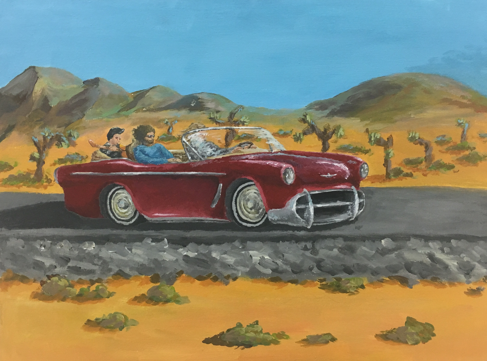
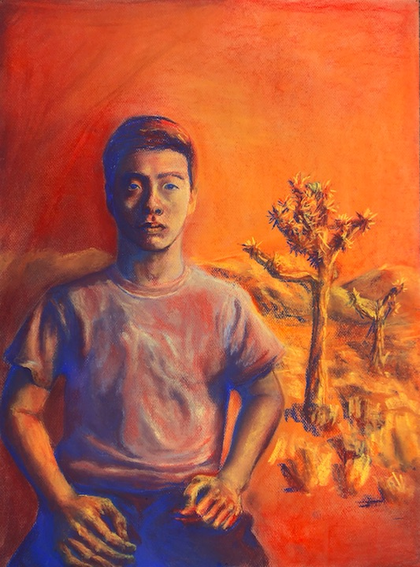
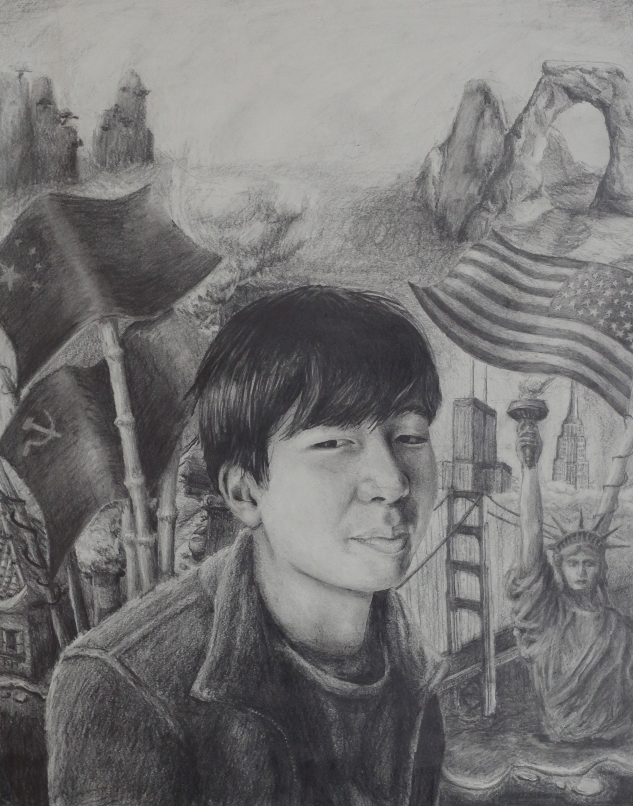
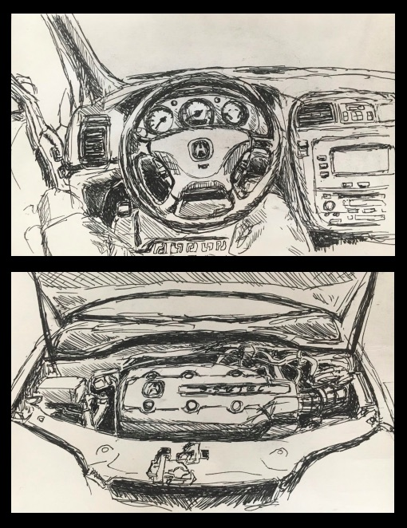
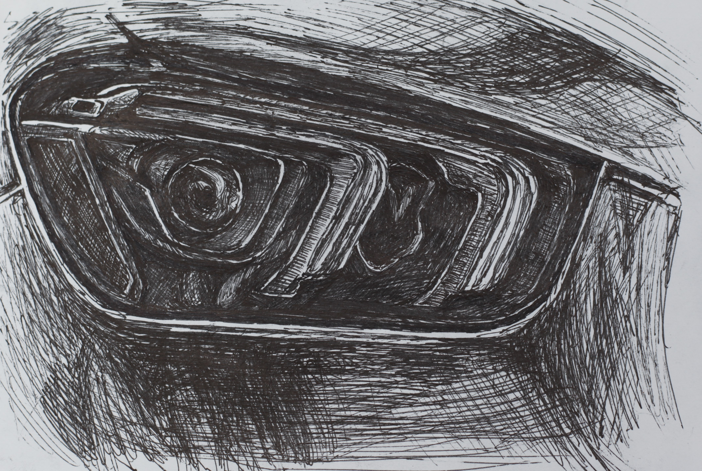
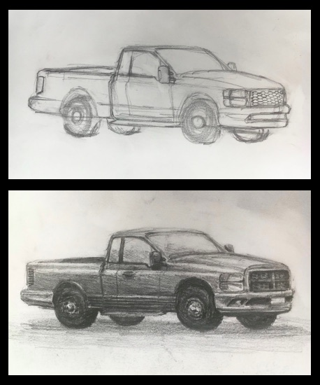
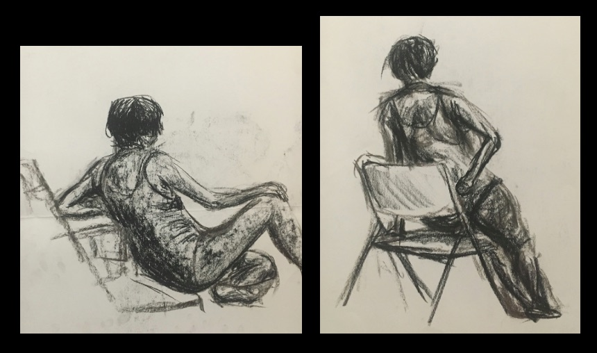
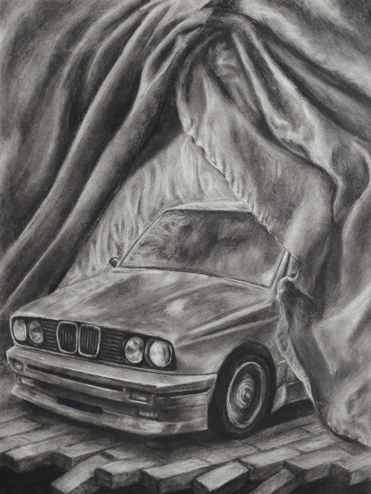
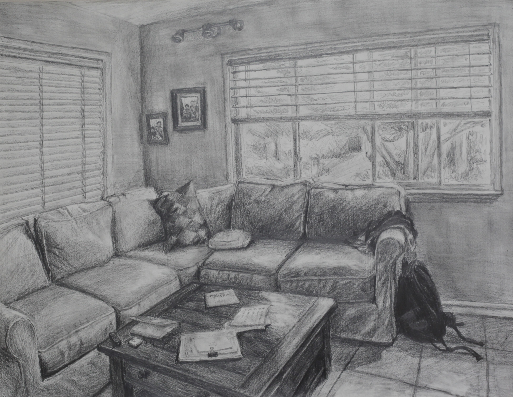
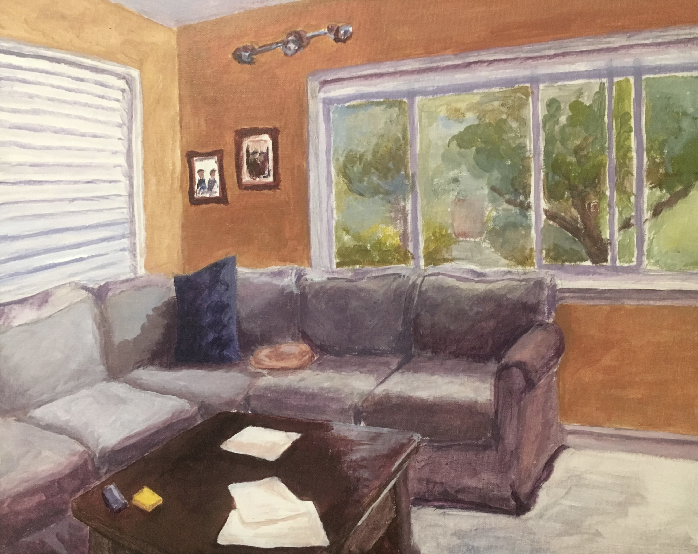

Older Work
A select collection of my older work, mostly from junior and senior year of high school.

Nomadic Band
Acrylic Paint on Canvas, 18" x 24"
Inspired by musical artists I was listening to at the time, U2 and Red Hot Chili Peppers, I created a narrative painting that combined my interest in cars with the landscape. I began with the image of a mid century car I designed based on typical cars of this era, with chrome trim, spoked rims and bubble style headlights. Using the vintage style car and specific landscape as anchors, I built the story of three musicians traveling through the desert to their next concert.

Self Portrait
Chalk Pastel, 18" x 24"
This is a self portrait I did in chalk pastel. I chose to make a desert background because I had recently visited Joshua Tree National Park, and was fascinated by the large expanses of desert vegetation and the sights to be seen throughout the park. Chalk pastel was a great medium to communicate the feeling of this environment due to its extreme warms and cools, similar to that of the desert. It also helps to illustrate my appreciation in the beauty of the SoCal landscape.

Alan
Graphite Pencil, 18" x 24"
This is a portrait of one of my closest friends, Alan. While working on it I realized that while Alan is the subject, this drawing is also a representation of many of my friends, classmates, and myself. The background represents the story of many second generation Chinese Americans, who despite being born and having grown up in the States, still carry on many of the morals and teachings our parents have instilled in us.

Interior Studies of an Acura MDX
Pen, 5.5" x 8.5"
I made these interior studies to build my knowledge of the interior design of passenger vehicles. Working with my family’s old suv, a 2003 Acura MDX as the subject, I observed that although the design of the car is nearly twenty years old, major elements never change such as the ignition, steering wheel, gauge cluster, and infotainment systems. These studies helped me better understand the thought that goes into creating a comfortable and functioning vehicle interior.

Headlight From Life
Pen, 5.5" x 8.5"
This is a one and a half hour drawing done while observing the headlight of my dad’s car. My original focus was to refine my pen skills but as I worked I became fascinated by the intricate design of modern LED headlights. These headlights are composed mostly of dark gray and black plastics, with clear plastic trimming around the LED lights. I used value to show the subtle differences in the structure of the headlight.

Truck Process
Graphite Pencil, 5.5" x 8.5"
This drawing of a common personal pick up truck compiles basic features from many existing models. Although the features are not original, This drawing exemplifies my process when drawing any car, whether it be imagined or based on existing models. I always start with a rectangular prism in perspective, then I add major details such as headlights, doors, and wheels, and finally, I give the vehicle form by adding value.

Figure Studies
Charcoal, 18" x 24"
Using compressed charcoal for immediate satisfying contrast and texture, these are some of my first ever figure drawings. Translating the figures’ proportions from life to paper was challenging, but I focused on using mostly layers of value to build the form of the model.

M3 with Drapery
Charcoal, 18" x 24"
I created this scene with the sole intention of experimentation, letting my mind wander through the process, ,knowing that the final product would make little sense. I chose to draw a 1987 BMW M3, because it is a car that I have always admired since I was a child. I added the drapery, collapsing bricks, and flames to build a sense of texture and space in the piece.

Living Room 1
Graphite Pencil, 18" x 24"
Drawing my family’s living room from life taught me first hand how essential perspective is when creating a setting, and how it has the ability to unify a whole scene.

Living Room 2
Acrylic on Canvas, 16" x 20"
My second attempt at the living room uses an emotional, invented color palette meant to reimagine the actual drab browns and greys that exist in my family's living room. This color experiment helped me understand the power that color holds in art. The same scene in a different color scheme completely alters the mood of the work.